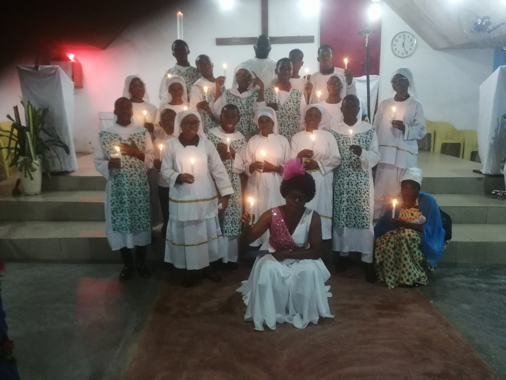

La Paroisse Saint-Benoît vous accueille dans la joie et la paix du Christ. Rejoignez notre communauté de foi, d'espérance et de charité.
Rejoignez-nous pour célébrer ensemble la foi chrétienne
Les horaires peuvent être modifiés lors des fêtes liturgiques. Consultez nos actualités pour plus d'informations.
Découvrez les différents services et activités de notre paroisse
Baptême, Confirmation, Mariage, Réconciliation... Nous vous accompagnons dans votre cheminement spirituel.
Formation chrétienne pour tous les âges : enfants, jeunes et adultes. Approfondissez votre foi.
Rejoignez notre chorale paroissiale et participez à la beauté des célébrations liturgiques.
Actions caritatives et soutien aux plus démunis. Ensemble, construisons un monde plus juste.
Ne manquez pas les temps forts de notre communauté
15h00 - 18h00
Salle paroissiale
Thème : "Être Lumière dans le Monde"
10h00
Église principale
Animation par les enfants du catéchisme
3 jours
Sanctuaire de Marienberg
Inscriptions ouvertes - 25 000 FCFA
Restez informés de la vie de notre communauté

Découvrez le programme complet de la Semaine Sainte avec les célébrations spéciales.
Lire la suite →Notre communauté se rassemble pour partager joies et peines, offrant soutien et réconfort dans tous les moments importants de la vie.
Lire la suite →Rejoignez-nous pour la rencontre mensuelle des jeunes de la paroisse.
Lire la suite →